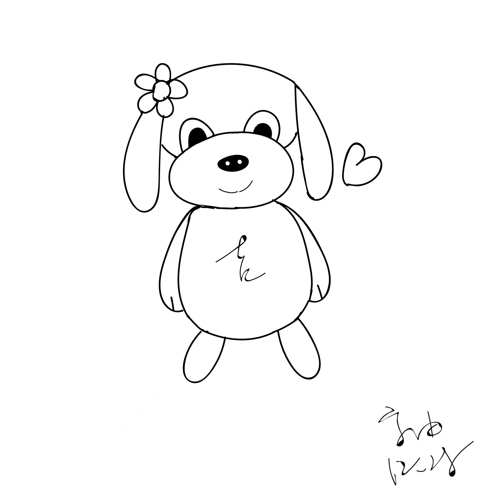
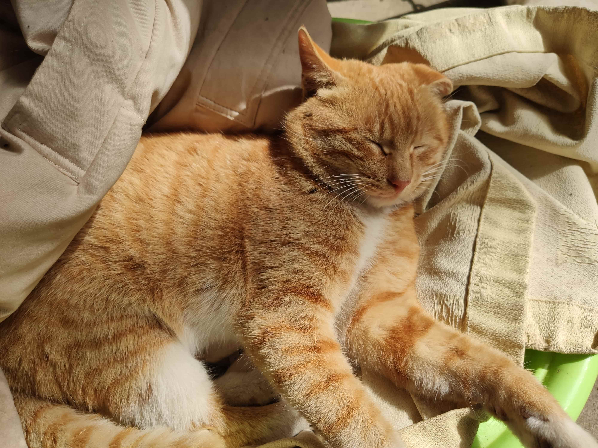
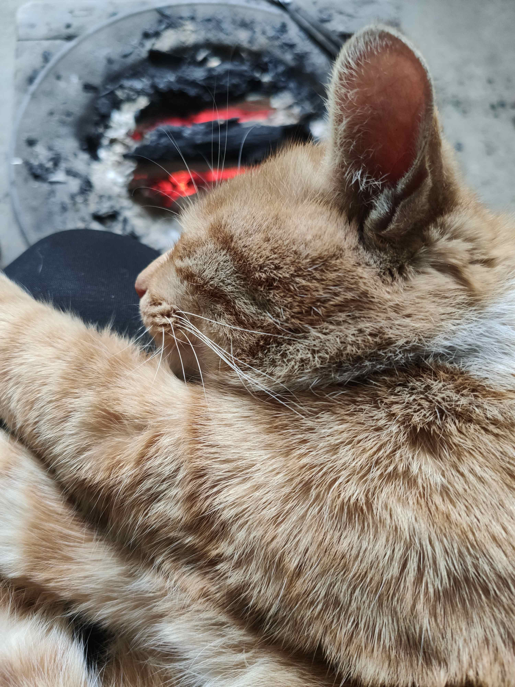

"I have two creatures,one represents DISIRE,anothor represents RATION;together them is a single human being."
Kindful Warning:Do not try to kidnip them.They may kill you !
Intro to Jimei
I'm Jimei,the cutest life in the ...Zamily！Wooo......My charming photo is following！

I love music.Once upon a time,I crazyly regard musicians and actists as dealers!Music is a kind of universal language,but at the same time,it keeps its role of showing oneself by different styles.My favorite color is pink(you can not know about this through this invaluable picture),which is the color for young girls and female.And I think,that's just why I am so popular in the folks here !Daylight is when I act(smashdance and sing around the world).At last,as well as what I repeatedly put emphsis on,DO NOT COMBAT WITH ME!Or...
I exist everywhere human exist,because I'm the core of life awareness.From this perspective,I'm the foundermental and provement of human life.When THE LORD created mankind,he created me.When THE LORD once tried to erase human from the world,it's also for my reason.So,human bear me to live,and bear me to die.And that's also why I say it's invalid and dangerous to reject me,just for its impossibility.
If somedog talks something bad about me later,just neglect,they are all absolutely rumors!
Intro to Jido(Jide)
Hello,minasan!My name is Jido(international,Jide,just in Chinese).I am the younger sister of Jimei,who is my elder sister(of course on blood).My fav color is blue,which is the color of sky and heaven.I skip in my master in evening together with my sister,when nobody interrupting man's thinking and the BODY hunger is somewhat be settled down.By the way,I love my sister,even though I always quarrel against her.
Let me tell you a truth:
I am verrrrrry smart!Not just for my IQ,but also my sense of prediction and calmness.And that's why I dislike my sister--smash without accounting the cost.I have been convicted to Plato these years.Everything human invented is originally kept in our mind for a long time.The learning process is just call back and cast mind on the knowledge from an abstact area.So,depending on me,through thinking and reading extensively and widely,you can also be smart!(Don't keep close to my sister)
Intro to Huzai
Hello,I'm Huzai,adapted by a kind human being,but it seems she is not very intesested in me,which made me so sorrowful.Luckily,I am adored by her other family members,including a boy called Zuyou,who forces me to call him master !I'm a new comer here,however,(although somewhat werid)the number of my photos rank highest among the 'pets' of Ziyou!Tenth More than Jisis(Ji sister)!Below are some of them:
 Now,you've known something about me.There is undoubtedly someone jealous of my apperance!Repeat again,I am one male cat!Welcome sexy kitties to connenct with me!
Opinion from Ziyou
My pets have all introduced themselves yet.It's to me now....In my heart,they are all unreplacable.Literally,I am thinking about one hard questions these days--Can everything in the world(even in the cosmos) concluded with two opponient factors,such as ration and emotion,body and soul,life and death,happy and sad,beauty and ugliness,old and new?When we are engar to have sex desire,we are controlled by Jimei,but when we sit down,read masterpieces by great philosophers and writers ,isn't under Jido's capture?So,combined Jimei and Jido--a twin sister integrated in us,we are a full human.
May be I am wrong.However,but that's what is above--with truth and wrong,we are the very human thinkers.
Now,I'm a student(real student),curious about the world,eager to know more about the world.However,friends of this kind are hard to hunt,especially in a country full of plain people and propaganda..Many folks think of me as a closed person.Actually,I'm just closed to them.I'm open to those who are deeping into themselves.
I'll be so grateful if you are interested in Zamily--the spiritual world of one common human creature Ziyou .Maybe you should guess the figurative meaning of 'zamily'.Yes,you are right,it's derived from the word 'family',which is a warm word not only in philosophy and literature,but also in our life experience.
If you are a cute babe,welcome to join us!(Huzai:......)
What we do?
On this site,we are glad to share everything concerning our daily life and serious thoughts.I think everyone is(and should be) just a student lack of knowledge about our magical world.So,be modest,be thoughtful,be enthusiastic is always be needed.Through our Jimei log,you can view of diverse appearance of human life.It may be some news,also possibility of sex related content.That's what we have mentioned a lot,all talking about the root of humanity is based on reality.We just want to be real,common and brave.
In Jido's log,we are intended to share thoughts deeper and more serious.Jido is representing ration.In this scale,everything should be settled in a convincing place.Contrast to Jimei,Jido has nothing beneficial to material life and accountable profits,but,trust me,it will fullfill your intelligence life.
Besides,this website is also worked as a tech blog showing an inprofessional students leaning on CS.Ziyou loves computer so much,and he determined to this with his whole heart.Bless him with good luck!(actually he prefer to be accompanied with)